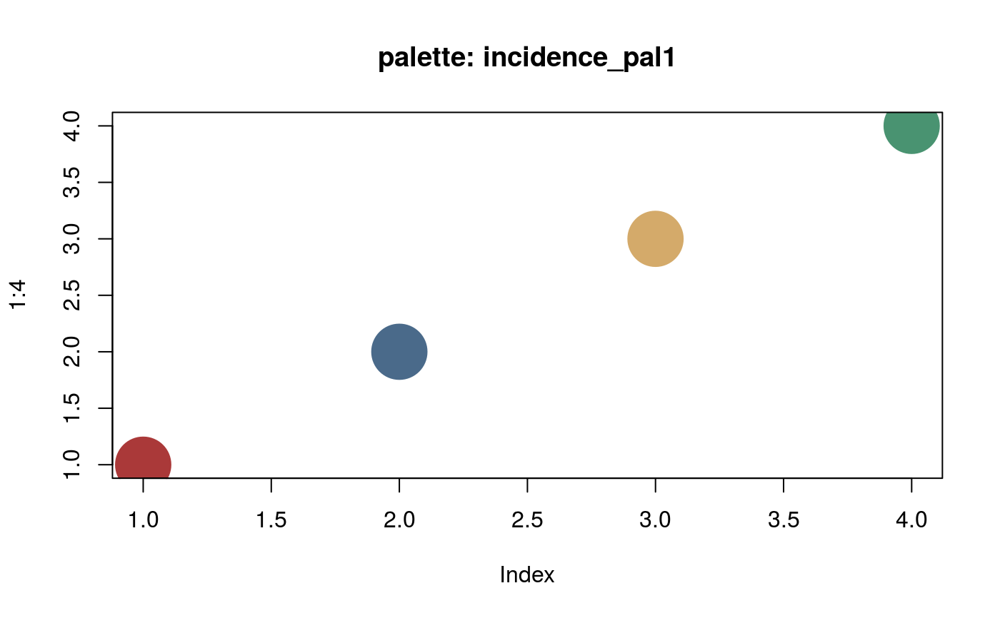

palettes.Rd
These functions are color palettes used in incidence.
incidence_pal1(n) incidence_pal1_light(n) incidence_pal1_dark(n)
a number of colors
plot(1:4, cex=8, pch=20, col = incidence_pal1(4), main = "palette: incidence_pal1")plot(1:100, cex=8, pch=20, col = incidence_pal1(100), main ="palette: incidence_pal1")plot(1:100, cex=8, pch=20, col = incidence_pal1_light(100), main="palette: incidence_pal1_light")plot(1:100, cex=8, pch=20, col = incidence_pal1_dark(100), main="palette: incidence_pal1_dark")
Thibaut Jombart thibautjombart@gmail.com